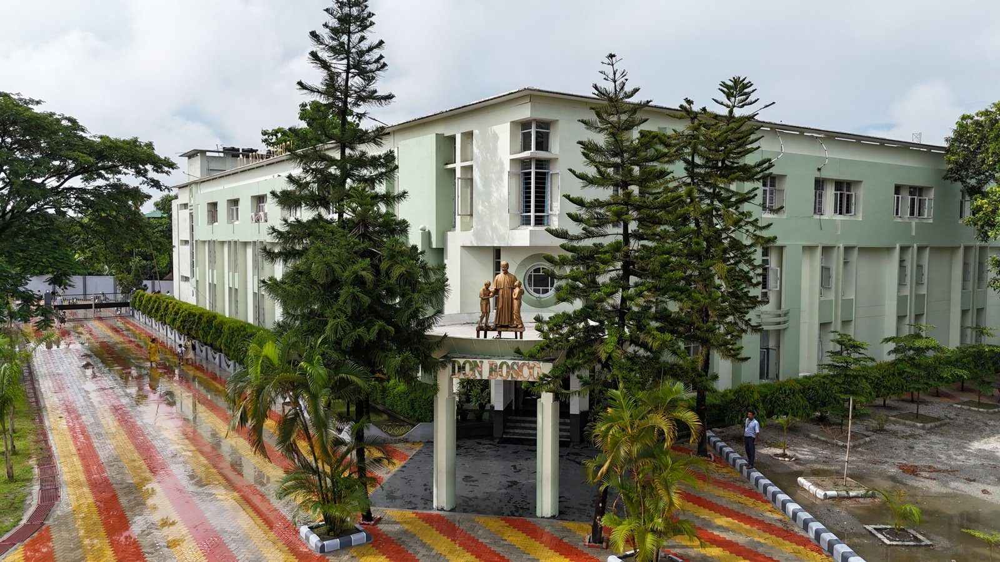

About the school
A Salesian school in the Dooars, established in 2007, teaching children from UKG to Class XII.
Our story
Don Bosco School Oodlabari was established in 2007, as a bifurcation of the Don Bosco Siliguri campus. It was the brainchild of Fr. Francis V.L., the school's first principal.
The school is owned and administered by the Salesians of Don Bosco, North India. It is a Catholic minority institution, English-medium and co-educational, affiliated to the Council for the Indian School Certificate Examinations, New Delhi, with School Code WB366.
It stands at Oodlabari, on Kranti Road, in the tea gardens at the foothills of the Himalayas, and serves families across the Dooars.
Principals of the school
Fr. Francis V.L.
Fr. Panapurayil Mathew
Fr. Tomy Mathew
Fr. Sanjay Manohar Kujur
Fr. Tijo Thomas
Fr. (Dr.) Aju Kurian

From the Principal
Our aim is to shape students who are not only academically proficient but also morally grounded and equipped to face the challenges of a rapidly changing world.
Fr. (Dr.) Aju Kurian, SDB
Principal, Rector and Secretary
The Principal's message sets out six priorities for the school, in his own words:
- Empowering Educators. Training teachers with both academic tools and emotional intelligence to support each child with care and empathy.
- Beyond Marks. Encouraging skill-based learning that fosters creativity, critical thinking, and personal growth.
- Values and Life Skills. Instilling core values like honesty, humility, and courage through life skills education.
- Discipline with Dignity. Fostering a culture of mutual respect, confidence, and responsibility.
- Learning from Nature. Inspiring environmental awareness and stewardship through outdoor learning.
- Digital Balance. Promoting healthy tech habits and social-emotional well-being.

Vision
To build a virtuous society where everyone lives in harmony with God and nature through the holistic, value-based education of our students.
The school's mission is the holistic development of every child into a young person who is physically strong, intellectually competent, emotionally balanced, socially committed, morally upright, environmentally sensitive, and spiritually enlightened, and who contributes to nation-building.
The school's patron is St. John Bosco, born in 1815 at Becchi, Italy, ordained a Catholic priest in 1841, and founder of the Salesians in 1859. His Preventive System, reason, relationship and religion, guides how the school educates.
Core values
- Integrity. Truth, honesty and fairness.
- Compassion. Empathy, kindness and generosity.
- Self-discipline. Self-control, perseverance and respect for authority.
- Love of God. Prayer, scripture and gratitude.
- Love for Nature. Care for creation and sustainability.
- Respect for Others. Empathy, humility and inclusivity.
- Spiritual. Reflection, mindfulness and spiritual growth.

The coat of arms
The school crest carries the motto "Virtue and Knowledge". The shield stands for protection, and each emblem inside it carries a meaning every Bosconian learns to read.
The emblems
- Sun
- Knowledge, light and enlightenment.
- Lamp
- The light of learning.
- Open book
- Knowledge, wisdom and the pursuit of learning.
- Lotus
- Purity, beauty and enlightenment.
The colours
- Gold
- Excellence and achievement.
- Blue
- Trust and wisdom.
- Red
- Energy and passion.
- Silver
- Clarity and truth.
The school anthem
Sung at school gatherings, the anthem names the garden, the Teesta and the Himalayas the school calls home.
Chorus
God's own garden, God's own land,
Nestled in the hills so grand,
With the Teesta flowing by,
And the Himalayas high.
Don Bosco, Don Bosco,
Hail our Alma Mater dear,
Guiding us with love and care,
Through each passing year.
Verse 1
In the morning light we rise,
With the sun and clear blue skies,
Learning, growing, side by side,
With our teachers as our guide.
In the classrooms, on the field,
Knowledge blooms and dreams take flight,
Don Bosco, our beacon bright.
Verse 2
Through the corridors we roam,
This our school, our second home,
Friendships forged in joy and cheer,
Memories that last for years.
In the sports and in the arts,
We excel with all our hearts,
Don Bosco, our pride and joy.
Verse 3
As we journey through the years,
Facing challenges and fears,
With our values strong and true,
We'll achieve all we pursue.
In the future, we will shine,
Carrying your light divine,
Don Bosco, forever ours.
Leadership
The school is led by its Rector and Principal, with a Vice Principal, Vice Rector and Campus Minister.
- Fr. (Dr.) Aju Kurian, SDB, Principal, Rector and Secretary
- Fr. John Selvan, Vice Principal and Administrator
- Fr. (Dr.) Antony Vayalil, Vice Rector
- Fr. Sunit Kiro, Campus Minister
School hours
Summer. UKG and Class 1: 8:30 am to 12:40 pm. Classes 2 to 12: 8:30 am to 2:30 pm.
Winter. UKG and Class 1: 8:50 am to 12:50 pm. Classes 2 to 12: 8:50 am to 2:30 pm.
The school's 57 teachers, with their subjects, are listed on the staff page.
Awards and recognition
Honours the school has received in recent years, as published by the school.


2026
- Minervaa Edu Achievement Awards: Certificate of Excellence for Consistent Scholastic Achievement, 19 September 2026.
- The Telegraph School Awards, North Bengal Chapter: Vidya Mandir Trust award for extra-curricular activities; Sister Nivedita University award for maintenance and eco-friendly environment; TTEF award for social service; IIHM award for academics (ICSE); and the Caring Minds certificate, "A School that Cares", 29 September 2026.
- Dr A P O'Brien Memorial Lifetime Achievement Award for a Teacher, presented to Mary Lai, 29 September 2026.
- Yoga Sangam Patra, International Yoga Day, 21 June 2026, with 150 participants.
- Swachhata Hi Seva 2026, certificate of participation.
- Ek Ped Maa Ke Naam 3.0, for planting 480 saplings.
2025
- Minervaa Edu Achievement Awards: ICSE School of the Year, Eastern India, for Best Infrastructure Excellence, 30–31 August 2025.
- The Telegraph School Awards: IIHM award for academics (ICSE); Vidya Mandir Trust award for extra-curricular activities; TTEF awards for maintenance and eco-friendly environment and for social service; and the Caring Minds certificate, "A School that Cares", 8 November 2025.
- National Sports Day 2025, certificate of participation.
2024
- The Telegraph School Awards: Vidya Mandir Trust, IIHM, and JIS University awards, 19 October 2024.
2023
- The Telegraph School Awards: IIHM, Ambuja Neotia, and Luxmi Group awards, 28 November 2023.
The school also holds Fit India recognition.
Admissions open for UKG and Class XI
Forms close 10 December 2026. See the dates, the process and the documents needed.